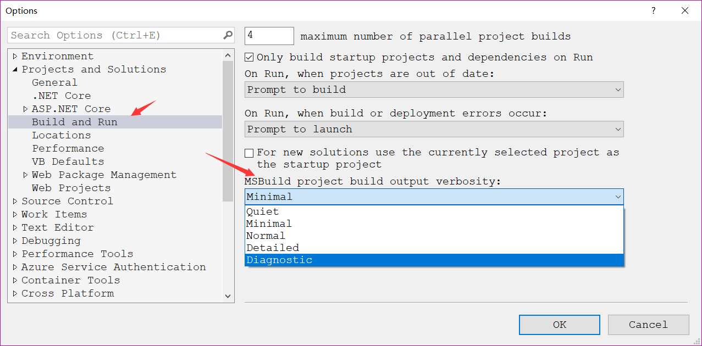
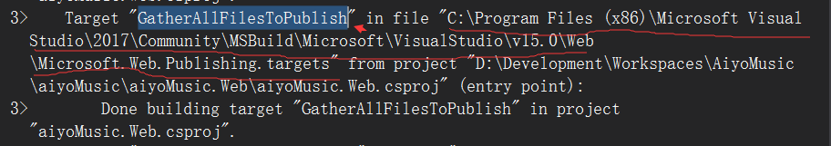

msbuild(2)-In Visual Studio
使用Visual Stuido(以下简称VS)发布(publish)web application到文件系统(File System)的时候，我们希望可以定制待发布的前端文件，并且在msbuild deploy的时候对构建流程进行处理！如何做呢？
*.pubxml的配置
vs-msbuild发布的流程如下：
- 编译依赖的各个项目工程
- 编译web主站点
- 拷贝html+css+view文件到obj目录下的临时文件夹中(例如：
obj\x86\Release\Package\PackageTmp\) - 拷贝步骤(3)的文件到.pubxml指定的"publishUrl"中去
通常我们想做的事情是在以上步骤的第三步之后，对临时生成的PackageTmp做定制化处理(custom)!
通过GatherAllFilesToPublish这个可以办到：
<!--.pubxml的配置文件中添加如下节点-->
<Target Name="CustomPostPublishActions" AfterTargets="GatherAllFilesToPublish" >
<Exec Command="echo Post-PUBLISH event: Active configuration is: $(ConfigurationName)" />
</Target>
并且透过Exec任务结合echo命令打印出调试信息！
Output中不显示Message任务
在此同时解决一下上一篇文章中提到的Message这个任务不在Output中显示的问题。
方法1：设置Message的Importance=“high”
<Target Name="CustomPostPublishActions" AfterTargets="GatherAllFilesToPublish" >
<Message Importance="high" Text="This is debug info!"></Message>
</Target>
方法2：设置MSBuild output verbosity为Detailed，路径如下：
Tools -> Options -> Projects and Solutinos -> Build and Run -> MSBuild
如果想看msbuild详细的Build Target顺序，可以将此项设置为Diagnostic

说明：写脚本调试，强烈推荐设置成
Diagnostic,这样可以看到超详细的msbuild构建信息。例如：加载内置的环境变量，加载msbuild保留属性(resolve-properties)。 同时由于VS各个版本的不同，构建Target名称不一样，通过这个设置也能快速定位Target，找到定制切入点！
c# web构建使用的是C:\Program Files (x86)\Microsoft Visual Studio\2017\Community\MSBuild\Microsoft\VisualStudio\v15.0\Web\Microsoft.Web.Publishing.targets
这个targets文件，感兴趣的可以研究下这个文件了解详细的构建过程！ 如图：

通过查看Microsoft.Web.Publishing.targets文件不难看出GatherAllFilesToPublish是一个空目标，它的依赖目标有一个CopyAllFilesToSingleFolderForPackage,通过设置AfterTarget=“CopyAllFilesToSingleFolderForPackage"可以自定义web publish流程.
实例：发布前删除非压缩模式的css文件
<Target Name="CustomPostPublishActions" AfterTargets="GatherAllFilesToPublish" >
<ItemGroup>
<CssFiles Include="$(WPPAllFilesInSingleFolder)\Content\*.css"></CssFiles>
</ItemGroup>
<Delete Files="@(CssFiles)"></Delete>
</Target>
小技巧: $(WPPAllFilesInSingleFolder)这个变量通过在Microsoft.Web.Publishing.targets目标文件搜索关键字"PackageTemp"就可以找到！